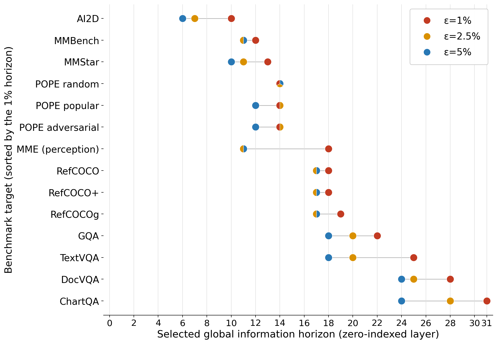
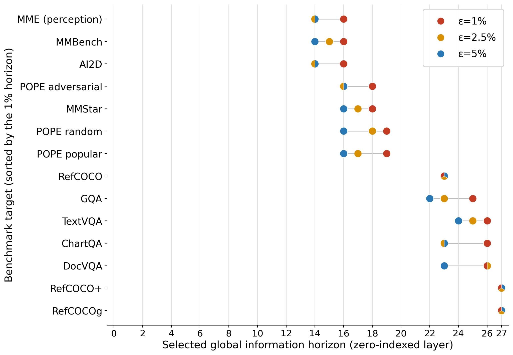

Video overview From object boundaries and text localization to variable-resolution tokens and learned relevance.
TL;DR Our method preserves near-lossless performance at 25% of the tokens and >85% retention at only 5.56%, by maximizing the semantic fungibility.
Overview
An image is not a uniform grid of information. A coherent object can be summarized; a word or an object boundary needs finer detail. Varest uses this principle of semantic fungibility to decide where to merge, then learns which visual tokens the language model still needs.
Method
Varest combines semantic merging before the LLM with relevance pruning inside it. Early decoder layers see the whole scene; later layers work with a smaller set of visual tokens.
Training across token budgets allows one checkpoint per backbone. Optional adaptive halting removes the remaining image tokens when a prediction-stability and confidence criterion is met.Supplementary tokenizer examples and diagnostics +
These figures belong with the tokenizer stages above: they show budget-dependent partitioning, how object and text regions are merged, and diagnostic measurements of the resulting partitions.
Varest tokenization across token budgets. Text remains at native resolution, while additional budget splits objects into finer semantic parts—for example, separating a head into face and hair.
Semantic compatibility affects token merging. Merging each person separately, or both people together, preserves the answer “Blue”; merging the people with the snowboard changes the answer to “White.”
Reading errors without token deletion. Orange boxes mark patches whose features are averaged while all 576 tokens remain at their original positions. Background averaging preserves the original readings; these are selected examples, with the full cohort reported in Table 8.
Tokenizer allocation and its failure cases. Cropped LLaVA-1.5-7B partitions before decoder pruning. The examples show boundary leakage at a small budget, a missed text detection, text cells merged at a small budget, and false-positive text cells; they illustrate mechanisms, not their frequency or effect on answer accuracy.
Spatial detail retained by the tokenizer. Reports whole-region mask IoU on RefCOCO and the retention of answer-associated OCR cells under different textness settings. These are spatial measurements, not answer-accuracy results.
Visualizations
Explore how semantic structure, text, and scene context are represented as the token budget changes. Select a view below; use “Open PDF” to inspect a figure at full size.
Same scene, different granularity. Object regions become finer as the budget increases. Text tokens remain identifiable across budgets. Examples use LLaVA-1.5-7B.
Relevance after reading. Nearly the same tokens are retained for two unrelated questions. The example suggests that early layers can absorb information before the corresponding image tokens are removed.
Results
5.56%
of the layer-averaged image tokens
86.10–92.33%
of full-token performance retained
3 backbones · 13 benchmarks
highest mean retention against 15 baselines at every evaluated budget
Across three LLaVA backbones and 13 benchmarks, Varest achieves the highest mean performance retention among 15 baselines at every evaluated budget. At 5.56% of the layer-averaged image tokens, it retains 86.10–92.33% of full-token performance.
Performance across visual tasks, backbones, and token budgets.
Performance at a glance
Mean performance retention ↑
Varest performance retention at four layer-averaged image-token ratios.
Backbone
5.56% tokens
11.11% tokens
22.22% tokens
38.89% tokens
LLaVA-1.5-7B
92.33%
97.08%
100.37%
101.89%
LLaVA-1.5-13B
91.31%
95.82%
100.03%
102.37%
LLaVA-NeXT-8B
86.10%
91.85%
96.04%
98.18%
Source: Table 1 of the paper. Mean retention averages 15 normalized metrics across 13 benchmarks; POPE contributes three metrics. Adaptive halting is disabled. For LLaVA-NeXT, ratios are applied to each image’s native sequence length.
↗
More performance at half the token budget. On all three backbones, Varest at 11.11% tokens outperforms every evaluated baseline at 22.22%. On LLaVA-1.5-7B, that is 97.08% retention versus the strongest baseline’s 94.50%.
Measured computation and optional adaptive halting +
Each point averages performance and computation independently over four budgets. Optional adaptive halting reduces FLOPs by a further 3.0–5.1%, with retention losses of 0.30–0.48 percentage points. These are computation savings, not measured latency improvements.Inside the tokenizer: object boundaries and text +
Visualization of the object localizer. Input images are shown above teacher boundary strengths computed from DINOv3 cosine distances, with the localizer’s predicted boundary strengths below.
Visualization of the text localizer. Top: input images. Middle: EasyOCR-derived text labels. Bottom: predicted per-cell textness, with brighter colors indicating higher probabilities across charts, diagrams, documents, and natural scenes.
Qualitative examples: low budgets, documents, and fine details +
These examples complement the main budget comparison with individual scenes and specialized cases. Look for which regions remain distinct when only a small number of visual tokens are available.
Varest at a 32-token budget. An example of the tokenizer’s low-budget allocation; interpret it alongside the paper’s budget comparison, where text is preserved at native resolution and additional budget refines object regions.
RefCOCOg example with position tags. A single validation example at a 32-token budget, illustrating the tokenizer representation for a referring expression. The paper’s position-tag ablation evaluates spatial detail on grounding tasks.
Semantic compatibility and answering. This snowboard-and-jacket example corresponds to the paper’s merging analysis: combining semantically different content can disrupt an attribute needed for answering, even when merging instances of the same category preserves it.

LLaVA visualization. An additional model example. The paper’s quantitative backbone comparisons cover LLaVA-1.5-7B, LLaVA-1.5-13B, and LLaVA-NeXT-8B; this image alone should not be read as a separate evaluation.

Qwen visualization. An illustrative example from another model family. The paper discusses Qwen2.5-VL-7B in its information-horizon analysis, but this image alone does not establish a full cross-model comparison.
Varest applied to a document image. The paper’s document examples show Varest identifying text while wasting little token budget on whitespace.
Per-backbone baseline comparisons +
Choose a backbone to inspect its per-benchmark radar comparison of Varest against the evaluated baselines. Comparing the three views helps show how the pattern changes across model sizes and families.
Per-benchmark results for LLaVA-NeXT 8B. Compares Varest with the evaluated baselines across benchmarks and token budgets. The paper reports LLaVA-NeXT budgets relative to a 2,880-token reference.
Supplementary analyses: averaging, visual dependence, and adaptive halting +
These supporting figures explore alternative averaging choices, dependence on visual information, and outcomes from optional adaptive halting.
Semantic compatibility affects token merging. The paper compares merging one token per person, one token shared by both people, and one token combining the people with the snowboard. The first two preserve the answer “Blue”; the last changes it to “White.”
Reading errors without token deletion. The selected examples average patch features while retaining all 576 tokens in their original positions. Background averaging preserves the original readings; Table 8 reports results over the full word-crop cohort.
Prompt-selection availability and remaining benefit vary with depth, task, and budget. The paper compares prompt-attention selection sensitivity with the remaining answer-informed advantage, examines deletion contrast for target regions, and measures how tighter TextVQA retention changes the remaining benefit.
Adaptive halt depths versus measured horizons and answer quality. The figure reports halt-depth frequencies, compares 7B halt depths with full-token information horizons, and plots score changes for metric–budget configurations. Saved work measures image-token processing across layers, not whole-model speedup.
Discussion
Semantics before selection
Varest preserves full spatial coverage during merging so early decoder layers can integrate scene context. Its learned selection does not require decoder attention weights and remains compatible with FlashAttention.
General visual question answering is relatively robust to compression. Document reading, chart understanding, and referring-expression grounding benefit more from larger budgets.
Scope and open questions
The current evaluation covers three LLaVA backbones. Extending to other model families, including Qwen-VL and InternVL, remains future work.
Lower FLOPs do not automatically imply lower latency; efficient implementation is still needed.
Applying semantic fungibility to other domains also requires domain-specific validation. An example would be for medical images: healthy organs can be represented as objects and lesions can be represented as text.
Varest combines explicit semantic guidance before the LLM with learned relevance selection inside it.
BibTeX
@misc{fu2026varest,
title={Just Respect the Semantics: Image-Token Compression via
Pre-LLM Semantic Variable-Resolution Tokenization and
In-LLM Relevance Pruning},
author={Tianhao Fu and Austin Wang and Charles Chen and
Roby Aldave-Garza and Victor Xie},
year={2026},
eprint={2610.18690},
archivePrefix={arXiv},
primaryClass={cs.CV},
url={https://arxiv.org/abs/2610.18690}
}